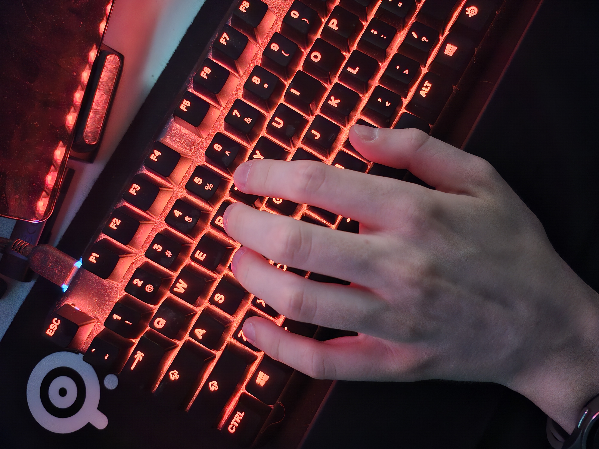

PC gaming inherited controls built in 1993 to beat a brother in Doom deathmatches. Project SYNDRA discards 150-year-old typewriter mechanics and builds tactical movement directly around human anatomy.
Christopher Latham Sholes engineered QWERTY to keep Morse telegraph transcribers from jamming mechanical typewriters. Every ergonomic keyboard alternative failed against entrenched corporate habits.
A 1993 sibling rivalry in Doom established WASD. A Quake tournament championship codified it into universal gaming law.
Shifting one column right unlocks surrounding keys, but leaves foundational biomechanical flaws untouched.
Mud tested Reisshub WSQA and identified severe joint fatigue. Standard keyboard layouts violate human movement physics.
Apex Pro Compact and decoupled precision mouse aligned on one synchronized competitive setup.

Every architectural change resolves an anatomical flaw from the 1868 typewriter standard.
Objective analysis of competitive ergonomic gains against practical transition costs.